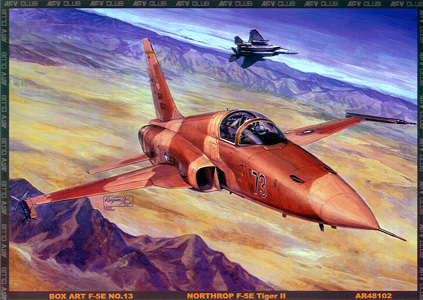
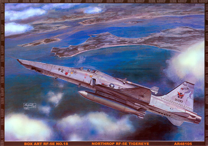
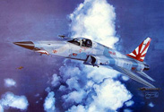
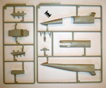
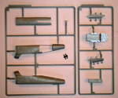
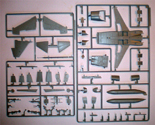
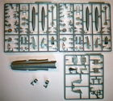
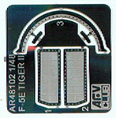
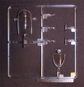

{kind=link}
{kind=link}
{kind=link}
{kind=link}
{kind=link}
{kind=link}
{kind=link}
{kind=link}
{kind=link}
{kind=link}
{kind=link}
{kind=link}


AFV 1/48 Northrop F-5E Tiger II and RF-5 Tigereye

Kit #48101, 48102 and 48105
MSRP $49.95 $39.95 from Great Models Web Store
Images and text Copyright © 2010 by Matt Swan
Developmental Background
During the 1950’s Northrop began an internally funded light fighter program with the intent to develop jet fighters capable of operating off of U.S. Navy escort carriers. At the time this was a reasonable project as the escort carriers were too small to accommodate current full sized jet fighters however before the program reached fruition the nave retired all the escort carriers. Northrop continued the development however adding a second seat and created the T-38 Talon trainer which first flew in 1959. While the U.S. Navy no longer had a demand for a light fighter there still existed a world market for the aircraft and the F-5A Freedom Fighter went into production for sale to U.S. Allies with 636 units manufactured. This production run concluded in 1972.
In 1970 Northrop began development of an upgraded version intended to provide better competition to the Russian MiG-21 which became the F-5E Tiger II. This aircraft featured improved engines with dramatically increased thrust. Also included was an extended fuselage providing increased fuel capacity, increased wing area improving maneuverability and contemporary electronics systems allowing for a more potent battle arena presence. The F-5E saw service with the U.S. services primarily in the Aggressor role as a combat trainer. It also was used by many U.S. Allies in similar roles and as a defense fighter. As an additional development the RF-5E Tigereye was produced in limited numbers as a reconnaissance version that featured improved radar systems and cameras that replaced one cannon and extended the nose. Financial considerations prevented many air forces from including these in their inventory so production numbers were fairly low.
At the time of this writing the Northrop F-5 in its various incarnations is still in use by the United States armed services and by several air forces around the world. Current units continue to see electronics upgrades even today and the aircraft has a useful future ahead of itself for many years to come.
The Kits
The year 2010 opened with the release of two F-5E kits from AFV Club that are identical other than the decal sheets. Nearly ten months down the road they followed this with the release of the RF-5E which simply swapped a couple key sprues to provide the modeler with the needed parts to build the Shark Nose or as some folks refer to it as, the Duckbill. These kits are all new tooling using state of the art systems and Chinese molding technology. All three kits feature excellent  crisply engraved panel lines and engraved rivet detail similar to what is found on the Kinetic F-86 and F-16 kits which makes one wonder who might be involved with the mold designs. As with some of the newer Tamiya kits we see vinyl keepers for the ordinance which allows for load-out changes now or later when aftermarket options become available. Additionally AFV Club is developing the masters to include a two seat F-5F (due in 2011) and printing decal sheets for other F-5E aircraft such as the ROCAF aircraft due out in late 2010. Common with all three kits is a small photo etched fret that provides intake fence covers and cockpit windscreen framing with incorporated rear view mirrors.
Now this kit does have a couple unusual construction aspects like the forward fuselage which is a three piece affair with two side sections and a lower section that come together then fit into the aft section that includes the wings. In comparison, the older Monogram F-5E kit has a more conventional upper and lower half assembly. The AFV Club approach seems like it may create more potential seams for the modeler to deal with however they do have an excellent reputation for good fitting assemblies so we can hope this will hold true in this case.  Another aspect of the kit that seems a little odd and I am not in a position to confirm the accuracy of this or not is that the exhaust nozzles are slightly angled towards the centerline of the craft. The RF nose looks great on first inspection but does suffer from a few minor inaccuracies which are mostly centered around side surfaces being slightly rounded when they should be flatter. Both kits have some minor coke bottle shape issues around the cockpit tub but again, minor. I don’t see any of this being a deal breaker though. At right you can see the sprues that are unique to the RF kit.
Each kit consists of seven complete sprues of parts done in light gray polystyrene along with a central fuselage section and two burner nozzles. We get a single common sprue of clear parts and of photo etched parts. The RF version comes with a couple extra vinyl keepers to accommodate the extended range fuel tank. The F-5E totals out with one hundred eighty five parts and the RF kit has one hundred eighty nine.





You may click on these small images to view larger pictures.
Decals and Instructions
Instructions for each kit consist of nearly
Identical twelve page booklets, each with a brief historical background of each type in three languages followed by paint color code charts unique for each type. The exploded view construction steps are all very well done with crisp clean images and color call-outs. Compliments of the wonders of modern digital publishing software the common steps are interspersed with images unique to the particular kit type. This certainly helps AFV get every cent worth of their investment from the primary kit molds and paperwork. Each instruction booklet ends with several painting and marking options for each kit.
Decals for each kit are excellent; color density is very good, print registry is dead on the money and the decal sheets include plenty of service stencils and warning markings. The F-5E kit gives options for a Royal Malaysian Air Force unit, a Singapore unit as well as the U.S.A.F. Aggressor and U.S.N. Adversary. The RF-5 kit offers options for three ROCAF units and a Royal Malaysian Air Force unit. The F-5N kit provides options for four U.S.N. VFC-111 “Sundowners” units. Decals all appear nicely thin and no unexpected problems with common setting solutions are expected.
Conclusions
AFV Club has historically kept their adventures restricted to land based armored vehicles as their name would imply however their expertise and attention to detail that has been exercised there is translating very well into the arena of modern aircraft. These kits feature excellent engineering, top quality parts production, immaculate fit and instructions that are well written and to the point. Decals are all very nice and comprehensive in their markings. Plenty of options are provided with the kits however the aftermarket is sure to be offering plenty more interesting sets for the discerning modeler. I give all three of these kits the highest marks and expect the two seat version to be equally nice.